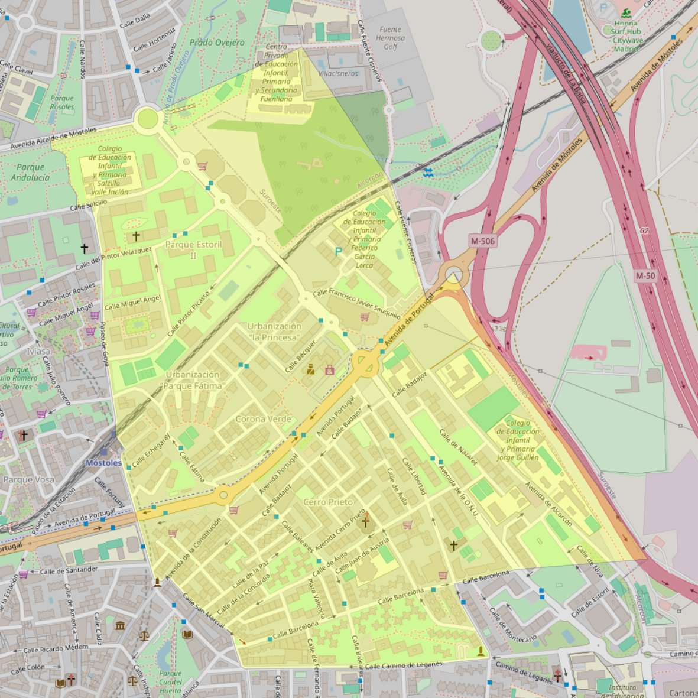

Divino Pastor

- Arciprestazgo
- Móstoles
- Población
- Móstoles
- Dirección postal
- Avda. Cerro Prieto, 34
- Código postal
- 28931
- Extensión
- 1,30 km² (130 ha)
- Teléfono
- 916 146 804
- Correo electrónico
- divinopastor-mostoles@diocesisgetafe.es
Arciprestazgos y parroquias de la Diócesis de Getafe
